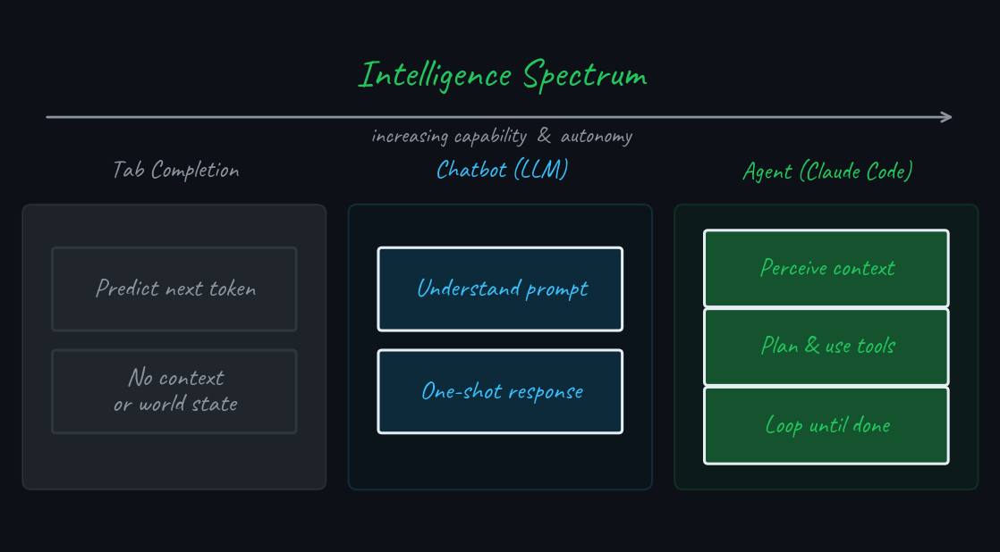
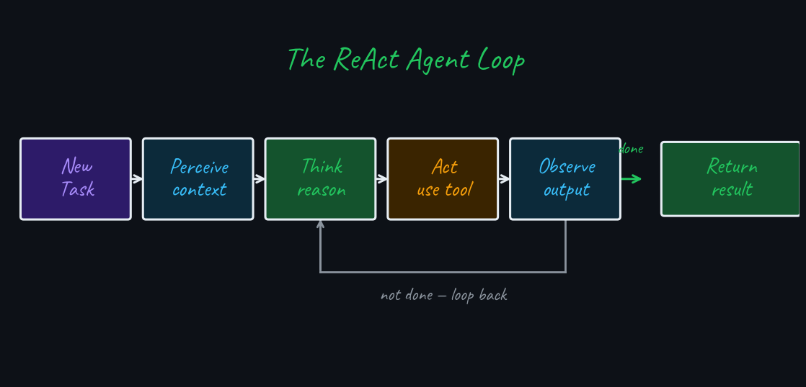
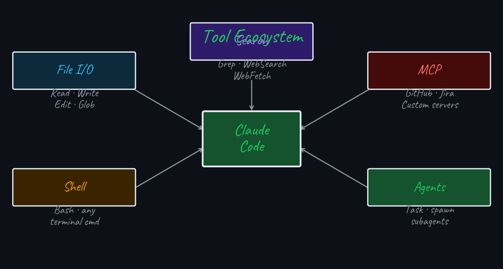
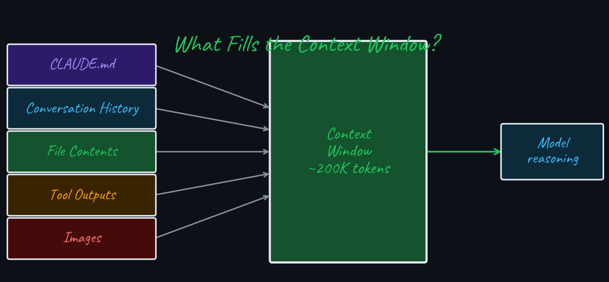
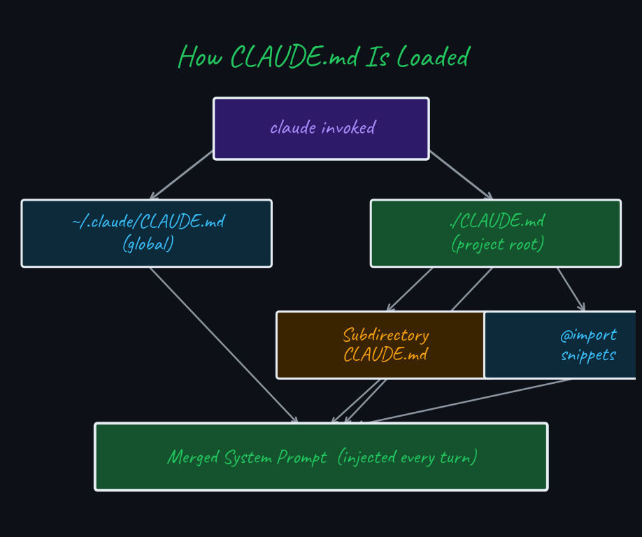
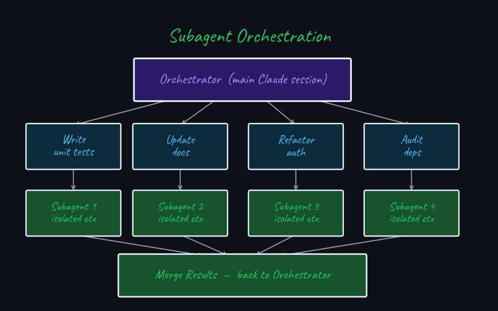
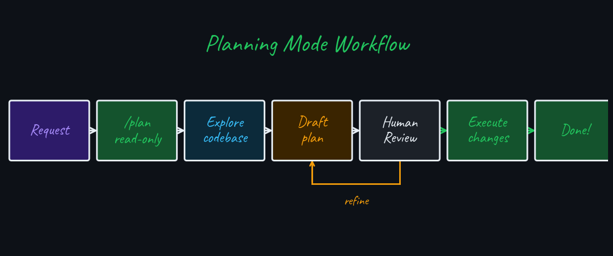
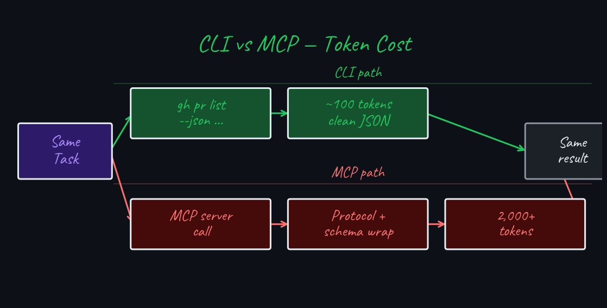
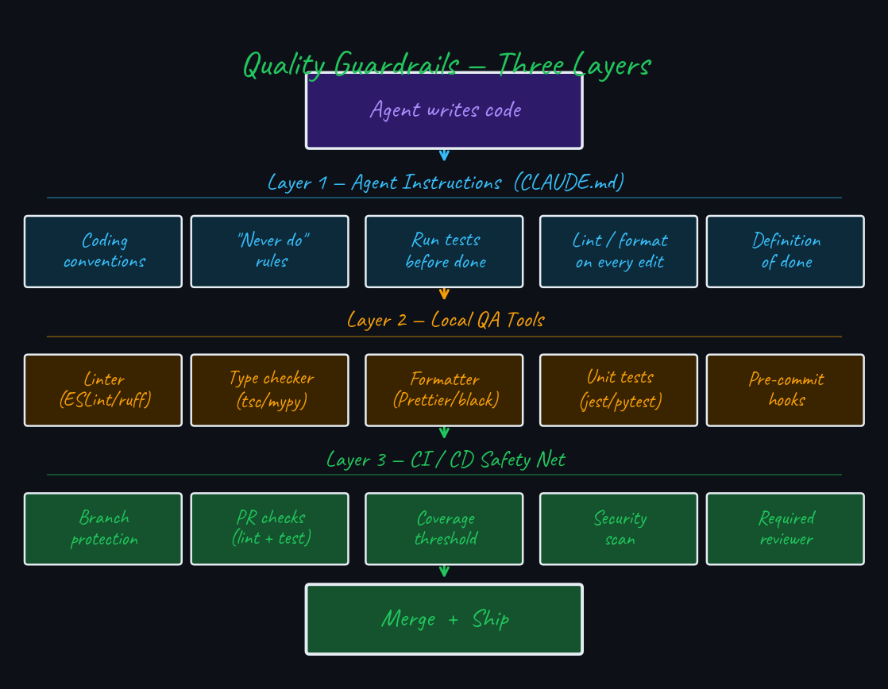
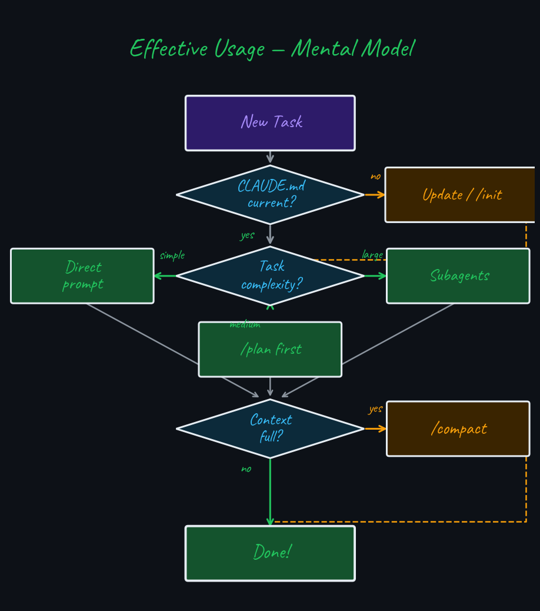

$ claude
✓ Claude Code v1.x
# Your AI pair programmer
# in the terminal
> How can I help?
Goal
Turn Claude Code from a smart autocomplete into a capable cognitive partner that handles complex engineering tasks autonomously.
Prerequisite
You have Claude Code installed and can run claude in a terminal.
“It’s not a chatbot in a terminal. It’s an agent that reads, writes, searches, and executes — and loops until the task is done.”
CLI-first · runs in your terminal, next to your shell, your files, your Git history
Agentic · not one-shot Q&A — it loops: perceive → plan → act → observe → repeat
Tool-using · reads files, writes code, runs bash, searches the web, spawns subagents
Key insight · the model decides which tools to use, in what order, and how many times until the task is done.
$ claude "add unit tests
for src/auth.ts"
● Reading src/auth.ts
● Scanning test patterns
● Writing tests/auth.test.ts
● Running: npm test
✓ 12 tests passing
“The difference between a chatbot and an agent is the difference between giving advice and doing the work.”

Statistic → next token
Understands → responds once
Acts → observes → iterates

Claude Code can run 10–100+ tool calls per turn, reading test output, fixing errors, and re-running until done.
“A tool is a function the model can call. The model decides when — and how many times.”

| Category | Tools | Enables |
|---|---|---|
| File I/O | Read, Write, Edit |
Read any file; create or surgically modify code |
| Pattern Search | Glob, Grep |
Find files by name; search content by regex |
| Shell | Bash |
Run tests, git, npm, docker — any terminal command |
| Web | WebFetch, WebSearch |
Fetch docs, read changelogs, search answers |
| Agents | Task |
Spawn isolated subagents for parallel work |
| MCP | Custom servers | GitHub PRs, Jira tickets, Postgres, and more |
Permission model · dangerous operations (file deletion, git push) require explicit user approval. You control the blast radius.
“Slash commands are the control panel for your session.”
Session & Context
| Command | Purpose |
|---|---|
/clear |
Reset conversation history |
/compact |
Compress history, keep summary |
/memory |
Edit CLAUDE.md files |
/status |
Show context window usage |
/cost |
Show token cost so far |
Automation
| Command | Purpose |
|---|---|
/init |
Generate CLAUDE.md for this repo |
/review |
Code review current changes |
/pr |
Open a pull request |
Control & Meta
| Command | Purpose |
|---|---|
/help |
List all commands |
/doctor |
Diagnose config issues |
/model |
Switch Claude model |
Modes
| Command | Purpose |
|---|---|
/plan |
Enter planning-only mode |
/fast |
Toggle Sonnet model |
. . .
/compact is your best tool in long sessions — it summarises history into fewer tokens while preserving all decisions.
“The context window is finite. What’s in it decides what Claude can reason about.”

Fills fast · large tool outputs (full files, verbose logs) consume tokens rapidly.
Fix · use /compact, limit reads to relevant files, and trim bash output.
“CLAUDE.md is persistent memory — what Claude should always know, even after
/clear.”

# My Project CLAUDE.md
## Stack
TypeScript monorepo, Node 22, pnpm
## Conventions
- ESM only (no require())
- Tests: Vitest + @testing-library
- Branch: feat/<ticket>-description
## Commands
- Test: pnpm test
- Build: pnpm build
## Never
- Push directly to main
- Commit .env files
Auto-generate
Run /init in any repo — Claude inspects the codebase and writes a CLAUDE.md for you. Edit it to add conventions and “never do” rules.
It compounds · add a rule once, Claude follows it forever.
“Why do one thing sequentially when you can do four in parallel?”

Use when
Avoid when
How · use the Task tool or ask Claude to “do X and Y in parallel.” Each subagent gets an isolated context copy; the orchestrator merges results.
“Measure twice, cut once.”

In planning mode Claude reads and reasons but cannot write, edit, or delete files. Validate the plan before any change lands.
| Situation | Without Planning | With Planning |
|---|---|---|
| Refactor across 20 files | Broken imports, partial changes | Coherent strategy, clean execution |
| Add auth to existing app | Picks wrong pattern for codebase | Existing patterns understood first |
| Multi-service change | Inconsistent API contracts | All surfaces identified upfront |
| Mysterious bug | Treats symptoms, not cause | Root-cause analysis before editing |
Rule of thumb · if the task touches >3 files or crosses service boundaries, plan first. ~5 minutes of planning saves 1–2 hours of rework.
“Claude Opus 4.6 is a reasoning engine. Give it intent, not step-by-step instructions.”
Micromanaging
“First read auth.ts. Then check the test file. Then look for mocks. Then write a test for login using the existing mock pattern. Don’t use jest.fn() directly.”
Over-constrained — model can’t adapt when file structure differs from your assumption.
Intent-driven
“Add comprehensive unit tests for the auth module. Follow existing patterns. Cover edge cases and error paths.”
Model explores, adapts, and makes better decisions with full context.
Mental shift · you are the product manager, Claude is the senior engineer. Tell it what and why — not step-by-step how.
| Principle | Chatbot Prompt | Agent Prompt |
|---|---|---|
| Scope | Single question | Full task with acceptance criteria |
| Context | Self-contained | “Follow existing patterns in the codebase” |
| Error handling | Re-prompt manually | “If tests fail, diagnose and fix before returning” |
| Verification | Read the reply | “Run tests and show me the output” |
End with a definition of done · “Task complete when: (1) tests pass, (2) no lint errors, (3) PR description written.” Prevents premature stopping.
“Not all integrations are equal. CLI calls are often 20× cheaper than MCP protocol overhead.”

| Situation | Prefer CLI | Prefer MCP |
|---|---|---|
| GitHub PRs / issues | gh pr list — minimal tokens |
Real-time webhooks needed |
| Database queries | psql -c "SELECT..." — direct |
Connection pool / auth managed |
| Jira / Linear | curl + API key — simple |
OAuth, token refresh required |
| File operations | Native Read/Write/Bash |
Almost never needed |
| Complex auth flows | When API is simple | SSO, multi-step OAuth |
Default rule · if a CLI tool (gh, psql, curl, kubectl) can do the job, use Bash. Reach for MCP only when persistent auth state, rate-limit handling, or real-time events are required.
“An agent that can write code can also write bad code. Scaffolding is what keeps quality up when you hand the keyboard to a machine.”
Without guardrails
With guardrails
Key insight · the agent is only as disciplined as your tooling forces it to be. Guardrails don’t slow down Claude — they make its output trustworthy.

# CLAUDE.md — Quality Rules
## Non-Negotiables
- Never commit with failing tests
- Never skip lint / type checks
- Never use `any` in TypeScript
- Never push directly to main
## Definition of Done
1. pnpm test passes
2. pnpm lint passes
3. pnpm typecheck passes
4. PR description written
Agent behaviour
Claude reads these rules every turn. When tests fail, it diagnoses and fixes — not skips. When lint errors appear, it resolves them before declaring done.
. . .
Prompt pattern · end every task with: “Task complete only when: tests green, lint clean, no type errors.”
“Claude Code is most powerful when you treat it as a partner, not a search engine.”

CLAUDE.md for memory · /plan for complex tasks · Subagents for parallel work · /compact when context fills · CLI > MCP for token efficiency · Intent over instructions
Other slide decks on software engineering practices
$ claude --help
Claude Code — AI pair programmer
Use it well. Ship great software.
Effective Claude Code Usage — Indrajeet Patil